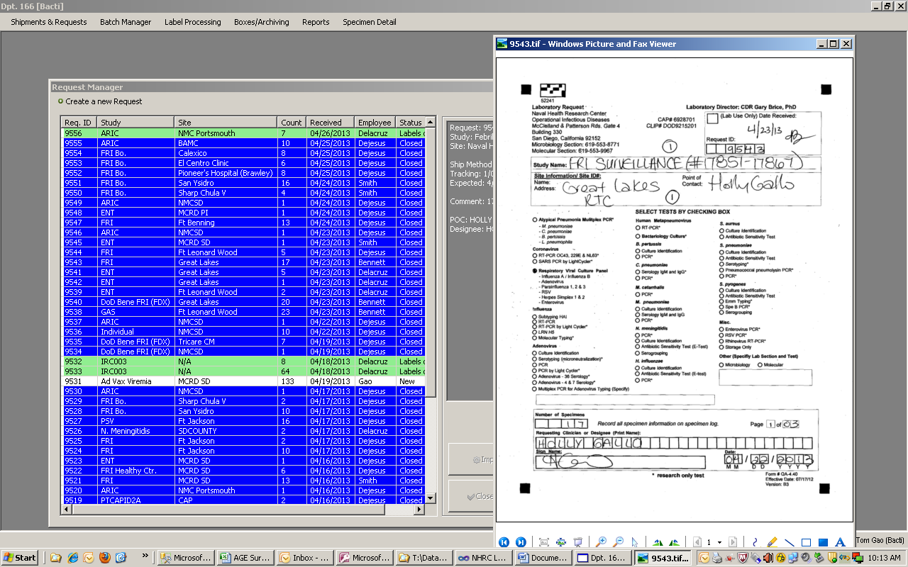
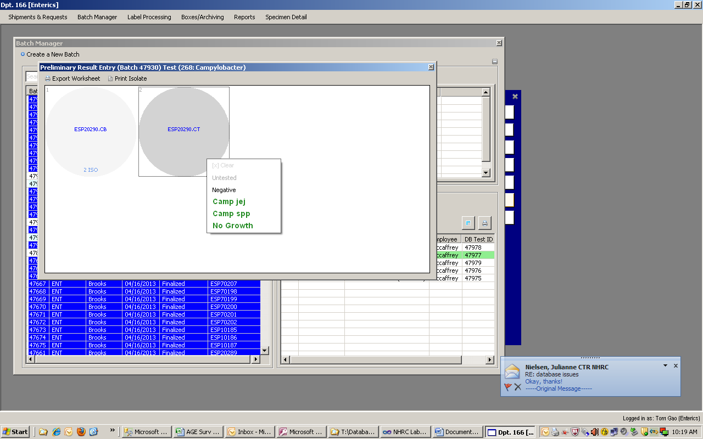
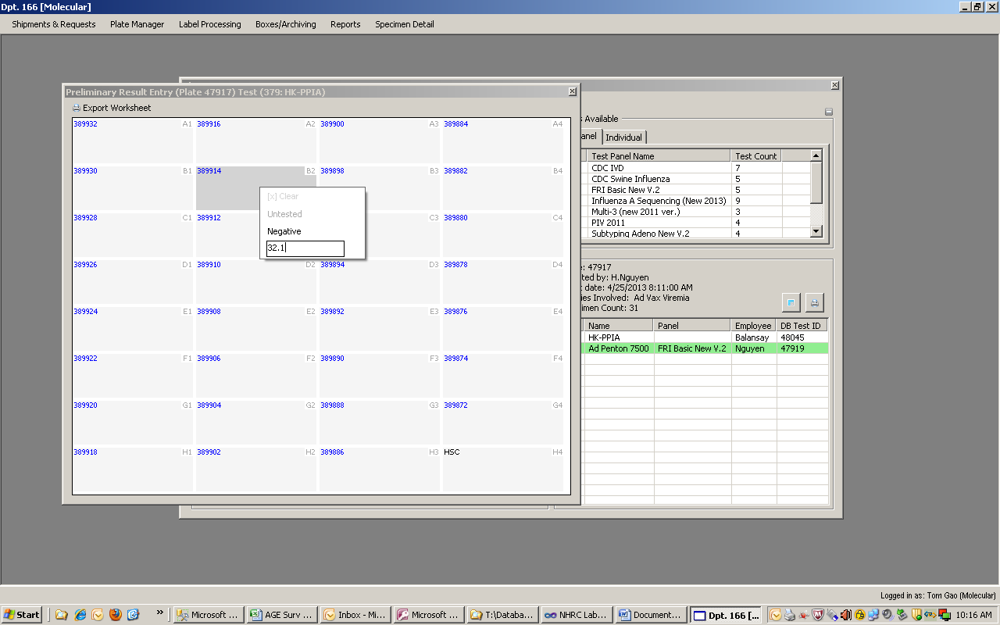
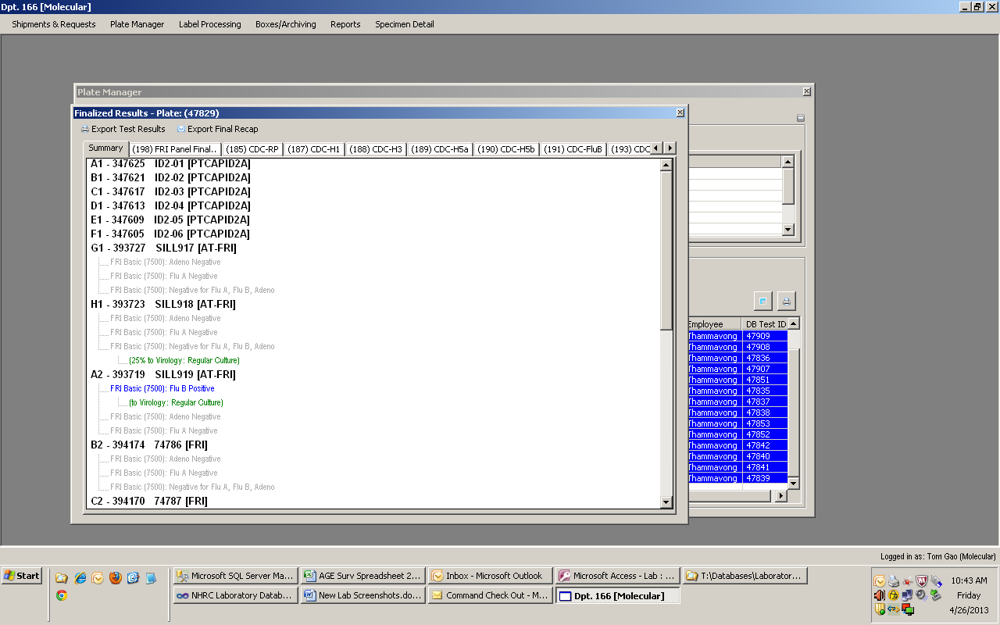
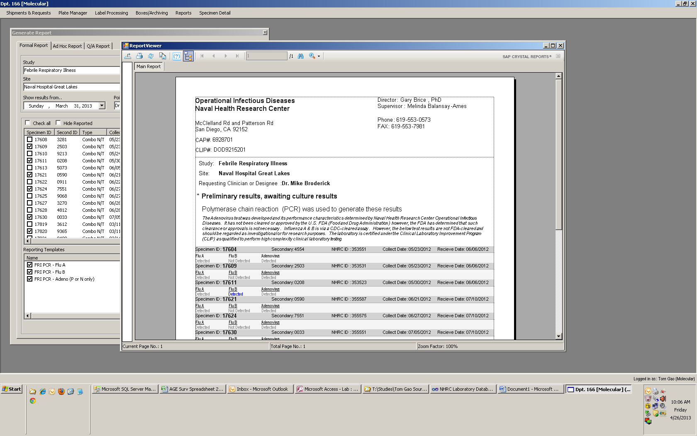

Naval Health Research Center
Laboratory Information Management System
Technologies Used: .NET C#, SQL Server, Crystal Reports

Figure 1.1 Request Form / Specimen Check-in

Figure 1.2 Specimen plate test entry (Campylobacter Enteric)

Figure 1.3 Plate map test instantiation and recording (Adenovirus penton, Molecular)
 1.4 Antibiotic sensitivity test result tracking (Bacteriology)
1.4 Antibiotic sensitivity test result tracking (Bacteriology)

1.5 Automated result interpretation and specimen queue-pass (Molecular to Virology)

1.6 Crystal reports: Final report generation and supervisor digital signature (Molecular)